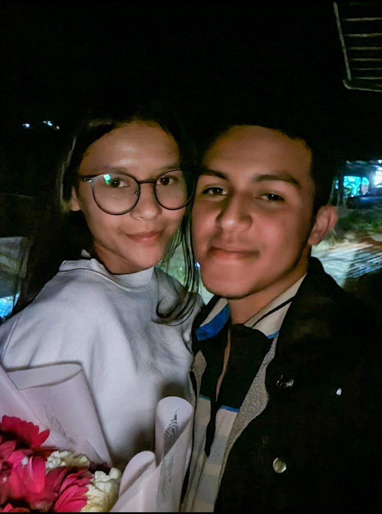
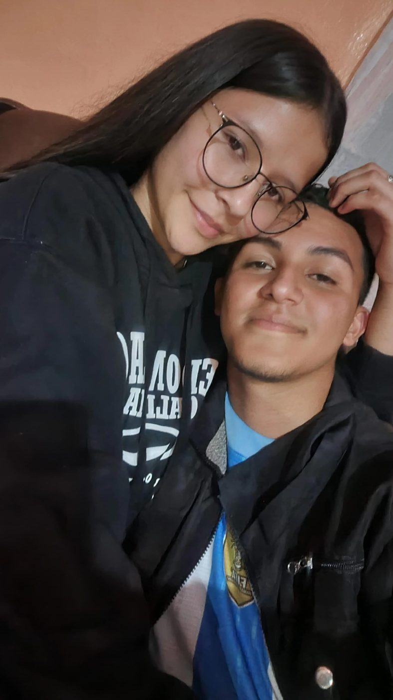
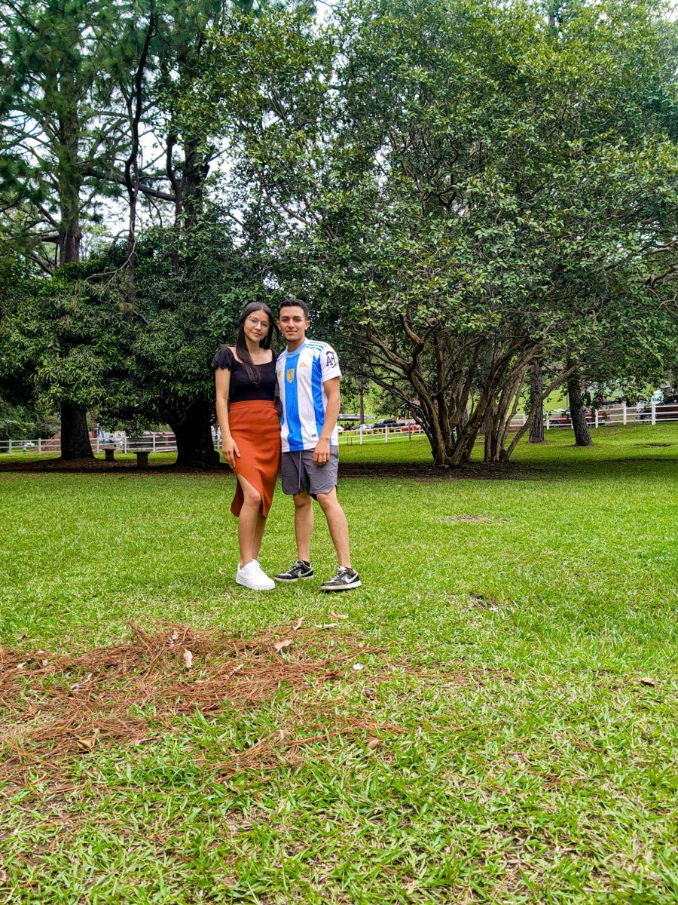
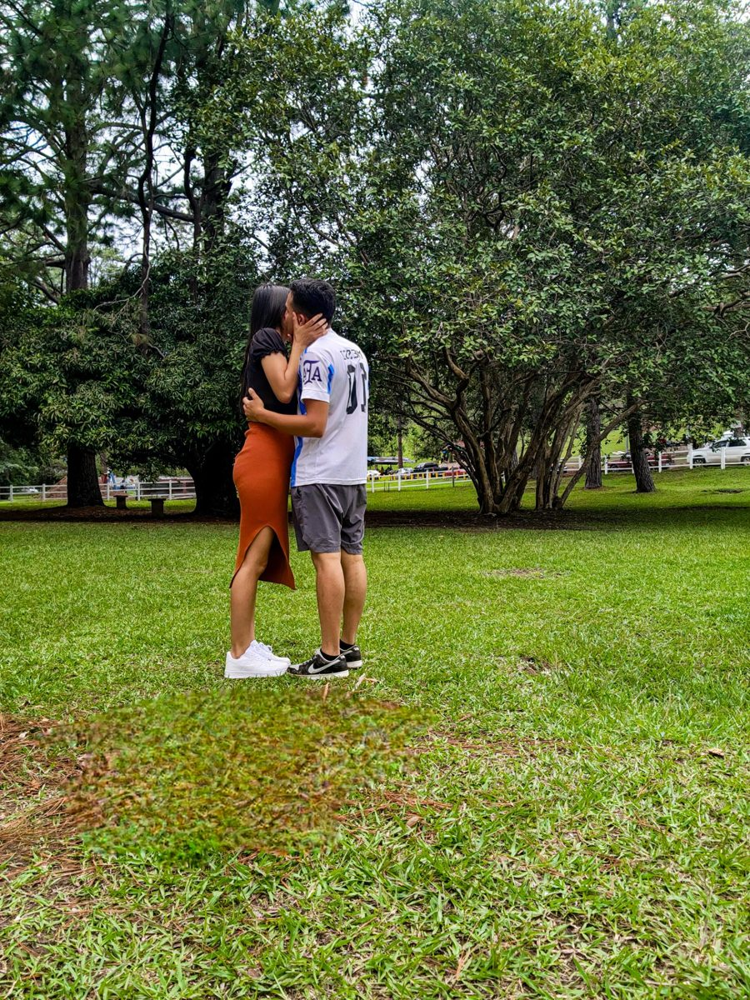
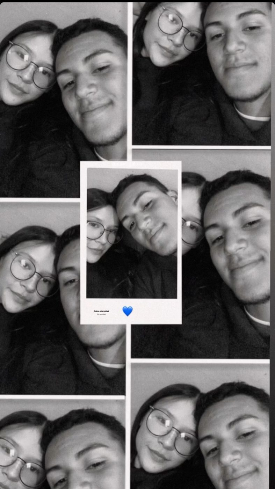
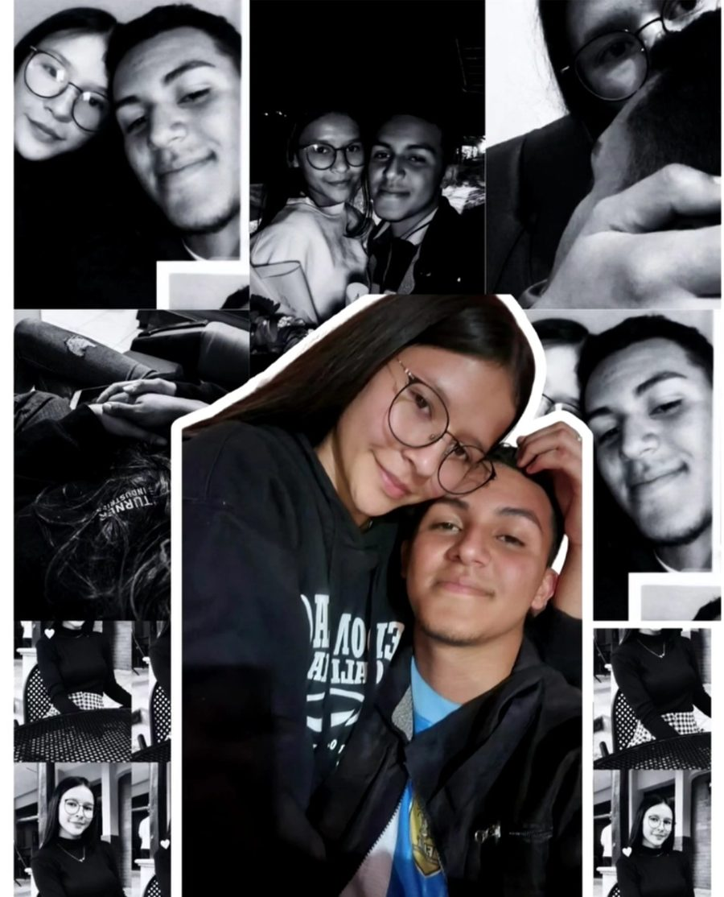

OJO
Te advierto que es mi primera vez haciendo esto por alguien. Con más razón lo estoy haciendo, porque yo te amo mucho y me gustas mucho, mi Iris. Todo lo que voy a decir es con toda mi honestidad y amor.
La primera vez que te conocí
Todo empezó un 15 de septiembre. No sabía que esa conversación sería el inicio de algo tan especial. Desde ese momento comenzamos a hablar y, sin darnos cuenta, la conexión fue creciendo. Era como si Dios ya lo tuviera planeado.
Cuando supe que me gustaste :)))
Lo supe la primera vez que nos vimos, cuando me diste esa camisa. Un gesto tan simple, pero tan significativo para mí. Yo también te regalé una. Desde ahí empezaste a ocupar un lugar diferente en mi vida… y en mi corazón.
Ya desde ahí me gustabas por como eres, física y psicológicamente. Me gustaba tu cara, tu cuerpo, tu forma de ser, tus actitudes, lo delicada que eres; todo eso me da ataque de amor. Y, obviamente, tu interés hacia mí.
Cuando me enamoré de ti ♥

Los días pasaroooon, cada vez me gustabas más. Nos veíamos y era incómodo, jejeje, pero igual nos hablábamos. Esa conexión que tenemos ahora, las miradas, cómo estábamos muy de cerca, tu cara y tu personalidad me tenían en volao.
Ya ese día, 23 de mayo, viernes, te pedí que fueras mi novia… En ese momento me enamoré mucho más de ti, con esperanzas de tener una relación estable contigo, con harto amor. Te dije que te quiero, me gustas, y así fue mutuo. Te abracé, te besé, y fue un momento muy satisfactorio e inolvidable ♥
¿Por qué tú?

Iris, sinceramente te elijo a ti por razones como lo increíble de persona que eres, una chica tan única. Por tu amabilidad, por el cariño que me das, que es capaz de alegrarme todos los días. Con tan solo tu presencia y tu compañía me das paz y alegría.
En las veces que no nos vemos, aunque sea uno de tus mensajes le sonrío al celular. Cuando me llega una notificación, me fijo si eres tú. Supe la persona que eres desde un principio, Iris. Eres única ♥
Nuestros momentos




¿Cuánto te amo??
Iris, yo te amo tanto que no me alcanzan las palabras. Te amo tanto, dispuesto a todo para siempre estar contigo, arriesgar literalmente todo, siempre querer verte sonreír, nunca con pena.
Te amo tanto que pasaré por las buenas y las malas contigo.
Te amo tanto que me di el tiempo para hacerte esto.
Te amo tanto que estoy atento a si me has enviado un mensaje o me has respondido.
Te amo tanto que siempre me preocupo por ti y estoy atento cuando estés mal.
Te amo tanto que te dedico la mayoría de mi tiempo.
Te amo tanto como para mejorar de hombre: mi cuerpo, mi mente, mis notas (aunque estoy en eso, jejeje).
Te amo tanto que siempre pienso en ti y me olvido de otras cosas…
Me esfuerzo tanto para ser suficiente para ti. Te amo tanto que siempre te veo con ojos de enamorado.
Te amo tanto que siempre te demostraré mi lado más débil solo a ti, capaz de llorar contigo, de mostrarte la gran confianza que tengo contigo, mi niña :c
Finalmente, mi querida Iris
Y ya, eso es todo… Lo único que quiero es que estemos juntos para siempre, apoyándonos, amándonos muchísimo y aprovechando cada momento que podamos vernos. Me comprometo a no hacerte daño nunca, ni hacerte sentir mal, sino todo lo contrario, mi niña linda.
Siempre estaré para ti: si necesitas ayuda, amor, desahogarte o solo hablar, ahí estaré. Quiero darte todo mi tiempo, porque eres una persona maravillosa y te tengo toda mi confianza y amor. Prometo seguir mejorando por ti, con todo mi amor.
—Isaac 🫶